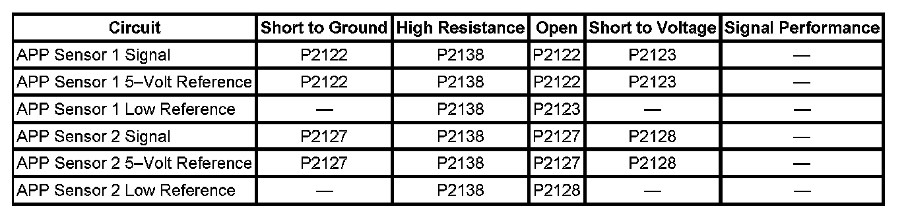

P2123
DTC P2120, P2122, P2123, P2125, P2127, P2128, or P2138
DTC DESCRIPTORS
DTC P2120
Accelerator Pedal Position (APP) Sensor 1 Circuit
DTC P2122
Accelerator Pedal Position (APP) Sensor 1 Circuit Low Voltage
DTC P2123
Accelerator Pedal Position (APP) Sensor 1 Circuit High Voltage
DTC P2125
Accelerator Pedal Position (APP) Sensor 2 Circuit
DTC P2127
Accelerator Pedal Position (APP) Sensor 2 Circuit Low Voltage
DTC P2128
Accelerator Pedal Position (APP) Sensor 2 Circuit High Voltage
DTC P2138
Accelerator Pedal Position (APP) Sensor 1-2 Correlation
DIAGNOSTIC FAULT INFORMATION

Perform the Diagnostic System Check - Vehicle prior to using this diagnostic procedure. Initial Inspection and Diagnostic Overview
TYPICAL SCAN TOOL DATA
APP Sensor 1 and 2:
CIRCUIT/SYSTEM DESCRIPTION
The throttle actuator control (TAC) system uses two accelerator pedal position (APP) sensors to monitor the accelerator pedal position. The APP sensors 1 and 2 are located within the pedal assembly. Each sensor has the following circuits:
- A 5-volt reference circuit
- A low reference circuit
- A signal circuit
Two processors are also used to monitor the TAC system data. Both processors are located within the engine control module (ECM). Each signal circuit provides both processors with a signal voltage proportional to pedal movement. Both processors monitor each other's data to verify that the indicated APP calculation is correct.
CONDITIONS FOR RUNNING THE DTC
P2120, P2122, P2123, P2125, P2127, P2128
- The system voltage is more than 5.23 volts.
- The ignition is in the Unlock/Accessory or Run position.
- DTC P0641 and P0651 are not set.
- DTC P2120, P2122, P2123, P2125, P2127, P2128 run continuously when the above conditions are met.
P2138
- The system voltage is more than 5.23 volts.
- The ignition is in the Unlock/Accessory or Run position.
- DTC P0641, P0651, P2120, P2125 are not set.
- DTC P2138 runs continuously when the above conditions are met.
CONDITIONS FOR SETTING THE DTC
P2120
The APP sensor 1 voltage is less than 0.325 volt, or more than 4.75 volts for more than 0.4 second.
P2122
The ECM detects that the APP sensor 1 voltage is less than 0.325 volt for more than 0.4 second.
P2123
The ECM detects that the APP sensor 1 voltage is more than 4.75 volts for more than 0.4 second.
P2125
The APP sensor 2 voltage is less than 0.325 volt, or more than 4.75 volts for more than 0.4 second.
P2127
The ECM detects that the APP sensor 2 voltage is less than 0.325 volt for more than 0.4 second.
P2128
The ECM detects that the APP sensor 2 voltage is more than 4.75 volts for more than 0.4 second.
P2138
The voltage difference between APP sensor 1 and APP sensor 2 exceeds a predetermined value for more than 2 seconds.
ACTION TAKEN WHEN THE DTC SETS
- DTCs P2120, P2122, P2123, P2125, P2127, P2128, and P2138 are Type A DTCs.
- The control module commands the TAC system to operate in the Reduced Engine Power mode.
- A message center or an indicator displays Reduced Engine Power.
- Under certain conditions the control module commands the engine OFF.
CONDITIONS FOR CLEARING THE MIL/DTC
DTCs P2120, P2122, P2123, P2125, P2127, P2128, and P2138 are Type A DTCs.
CIRCUIT/SYSTEM VERIFICATION
1. Ignition ON, observe the scan tool APP sensor 1 voltage parameter. The reading should be between 0.32-4.75 volts, and change with accelerator pedal input.
2. Ignition ON, observe the scan tool APP sensor 2 voltage parameter. The reading should be between 0.32-4.75 volts, and change with accelerator pedal input.
3. Ignition ON, observe the scan tool APP sensor 1 and 2 parameter. The scan tool should indicate agree.
4. Clear the DTCs with the scan tool. Operate the vehicle within the Conditions for Running the DTC, or within the conditions that you observed from the Freeze Frame/Failure Records.
- If DTC P2120 or P2125 are the only DTCs set, replace the control module.
- If DTC P0641 or P0651 are set, refer to DTC P0641 or P0651. P0641 P0651
CIRCUIT/SYSTEM TESTING
1. Ignition OFF, disconnect the harness connector at the accelerator pedal. Allow sufficient time for the ECM to power down.
2. Test for less than 5 ohms of resistance between each low reference circuit terminals A and F and ground.
- If greater than 5 ohms, test the low reference circuit for an open/high resistance. If the circuit tests normal, replace the ECM.
3. Ignition ON, test for 4.8-5.2 volts between each 5-volt reference circuit terminals C and D and ground.
- If less than 4.8 volts, test the affected 5-volt reference circuit for an open/high resistance or short to ground. If the circuit tests normal, replace the ECM.
- If greater than 5.2 volts, test the affected 5-volt reference circuit for a short to voltage. If the circuit tests normal, replace the ECM.
4. Ignition ON, verify the scan tool APP sensor 1 and 2 voltages are less than 0.1 volt.
- If greater than 0.1 volt, test the APP sensor 1 and 2 signal circuits terminals B and E for a short to voltage. If the circuit tests normal, replace the ECM.
5. Install a 3A fused jumper wire between the signal circuit terminal E and the 5-volt reference circuit terminal D of the APP sensor 1. Verify the scan tool parameter AP sensor 1 voltage is greater than 4.8 volts.
- If less than 4.8 volts, test the APP sensor 1 signal circuit for an open, or short to ground. If the circuit tests normal, replace the ECM.
6. Install a 3A fused jumper wire between the signal circuit terminal B and the 5-volt reference circuit terminal C of the APP sensor 2. Verify that the scan tool parameter APP sensor 2 voltage is greater than 4.8 volts.
- If less than 4.8 volts, test the APP sensor 2 signal circuit for an open/high resistance or short to ground. If the circuit tests normal, replace the ECM.
7. Ignition OFF, disconnect the harness connector at the ECM.
8. Test for less than 5 ohms of resistance on all APP sensor circuits between the following terminals:
- ECM C1 signal circuit terminal 29 to APP terminal E
- ECM C1 signal circuit terminal 32 to APP terminal B
- ECM C1 5-volt reference circuit terminal 36 to terminal C
- ECM C1 5-volt reference circuit terminal 56 to terminal D
- If greater than 5 ohms, repair the affected circuit.
9. Test for infinite resistance between APP sensor 1 signal circuit terminal E and APP sensor 2 signal circuit terminal B.
- If less than infinite resistance, repair the short between APP sensor 1 signal circuit and APP sensor 2 signal circuits.
- If all circuits test normal, replace the accelerator pedal.
COMPONENT TEST
IMPORTANT: Perform the Circuit/System Testing before proceeding with the Component Test.
Dynamic Test
1. Install a 3A fused jumper wire between the 5-volt reference terminal of the applicable APP sensor and 5 volts. Install a jumper wire between the low reference terminal and a ground.
2. Sweep the sensor through the entire range while monitoring the voltage between the signal terminal and the low reference terminal with a DMM. The voltage should vary between 0.30-4.98 volts without any spikes or dropouts.
- If the voltage is not within the specified range or is erratic, replace the accelerator pedal assembly.
REPAIR INSTRUCTIONS
Perform the Diagnostic Repair Verification after completing the diagnostic procedure.
- Accelerator Pedal Position Sensor Replacement
- Control Module References. Verification Tests